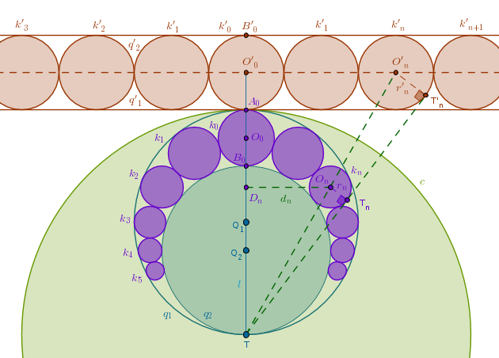

Mixed Problems
Problem 8
Pappus Chain. Given two circles \(q_1(Q_1, r_1)\) and \(q_2(Q_2, r_2)\)
(\(r_1 > r_2\)) that touch internally at \(T\) inscribe circles in the space
between \(q_1\) and \(q_2\) in such a way that each inscribed circle touches
two of its neighbors while touching \(q_1\) and \(q_2\).
Express the distance from the center of the \(n\)-th such circle to the line
\(l\) through the centers of \(q_1\) and \(q_2\) in terms of its radius
\(r_n\) and \(n\). Express \(r_n\) in terms of \(r_1\), \(r_2\) and \(n\)
Choose \(T\) as a center and \(2r_1\) as a radius of inversion. Under the inversion with respect to \(c(T, 2r_1)\) with positive power the given circles \(q_1\) and \(q_2\) become parallel straight lines \(q'_1\) and \(q'_2\) while the inscribed circles \(k_0\), \(k_1\), \(k_2\), ..., \(k_n\) become the circles \(k'_0\), \(k'_1\), \(k'_2\), ..., \(k'_n\) each of which has the same radius \(r'_n\) (preservation of tangency points) so we might as well drop the index \(n\) and simply write it as \(r'\):
For the family of \(k'\) circles the solution is trivial:
$$O'_0O'_n = d'_n = n \times 2 \times r'$$ $$\begin{equation} \frac {d'_n}{r'} = 2n \end{equation}$$Now we need to express \(d'_n\) and \(r'\) in terms of \(d_n\) and \(r_n\).
The triangles \(TD_nO_n\) and \(TO'_0O'_n\) are right by construction and they share a common angle at \(T\). By AAA they are similar and hence:
$$\frac {d_n}{TO_n} = \frac {d'_n}{TO'_n}$$ $$\frac {TO_n}{TO'_n} = \frac {d_n}{d'_n}$$Under the inversion with respect to \(c\) with positive power a straight line through \(T\) tangent to \(k_n\) at \(T_n\) will be transformed into itself while \(T_n\) will be carried into \(T'_n\). Since tangency points under inversion are preserved, it follows then that \(Line(T, T_n)\) will also touch \(k'_n\) at \(T'_n\).
Hence, the right triangles \(TO_nT_n\) and \(TO'_nT'_n\), which share a common angle at \(T\), are similar (AAA) and:
$$\frac {TO_n}{r_n} = \frac {TO'_n}{r'}$$ $$\frac {TO_n}{TO'_n} = \frac {r_n}{r'}$$ $$\frac {r_n}{r'} = \frac {d_n}{d'_n}$$From (1) then it follows that:
$$\frac {r_n}{d_n} = \frac {r'}{d'_n} = \frac {1}{2n}$$ $$\begin{equation} \bbox[#e8e8e8,3pt]{d_n = 2nr_n} \end{equation}$$Before we express \(r_n\) in terms of \(r_1\), \(r_2\) and \(n\) let us calculate the distance \(l_n = TD_n\). From the right triangles \(TD_nO_n\) and \(TO'_0O'_n\) it follows that:
$$\frac {l_n}{d_n} = \frac {TO'_0}{O'_0O'_n} = 2nr'$$ $$l_n = \frac {d_n}{2n} \times \frac {TO'_0}{r'}$$From (2):
$$\frac {d_n}{2n} = r_n$$and hence:
$$l_n = r_n \frac {TO'_0}{r'}$$Now we need to express \(TO'_0\) and \(r'\) via \(r_1\) and \(r_2\):
$$TO'_0 = 2r_1 + \frac {A_0B'_0}{2} = 2r_1 + \frac {TB'_0 - 2r_1}{2} = r_1 + \frac {TB'_0}{2}$$Since \(B'_0\) is the inverse of \(B_0\) with respect to \(c(T, 2r_1)\) with positive power:
$$TB'_0 \times 2r_2 = 4r^2_1$$ $$TB'_0 = \frac {2r^2_1}{r_2}$$ $$TO'_0 = r_1 + \frac {2r^2_1}{2r_2} = \frac {r_1(r_1 + r_2)}{r_2}$$ $$\begin{equation} r' = \frac {A_0B'_0}{2} = \frac {TB'_0 - 2r_1}{2} = \frac {r_1(r_1 - r_2)}{r_2} \end{equation}$$ $$\begin{equation} \bbox[#e8e8e8,3pt]{l_n = r_n \frac {r_1 + r_2}{r_1 - r_2}} \end{equation}$$Let us now express \(r_n\) in terms of \(r_1\), \(r_2\) and \(n\). From the similarity of the right triangles \(TO_nT_n\) and \(TO'_nT'_n\) it follows that:
$$\frac {r_n}{TT_n} = \frac {r'}{TT'_n}$$ $$r_n = r' \frac {TT_n}{TT'_n}$$Applying the ICC3 part of the definition of an inverse point to \(T_n\) and \(T'_n\) we obtain:
$$TT_n \times TT'_n = 4r^2_1$$ $$TT_n = \frac {4r^2_1}{TT'_n}$$and hence:
$$\begin{equation} r_n = r' \frac {4r^2_1}{TT'^2_n} \end{equation}$$where \(r'\) is already known from (3). To calculate \(TT'^2_n\) we recall that in this particular case it is a power of a point \(T\) with respect to \(k'_n\):
$$TT'^2_n = TO'^2_n - r'^2$$where \(TO'^2_n\) can be obtained via Pythagoras and the right triangle \(TO'_0O'_n\):
$$TO'^2_n = TO'^2_0 + 4n^2r'^2$$But we already found \(TO'_0\) while calculating \(l_n\):
$$TO'_0 = \frac {r_1(r_1 + r_2)}{r_2}$$ $$TO'^2_0 = \frac {r^2_1(r_1 + r_2)^2}{r^2_2}$$Taking \(r'\) from (3) we obtain:
$$r' = \frac {r_1(r_1 - r_2)}{r_2}$$ $$TO'^2_n = \frac {r^2_1(r_1 + r_2)^2}{r^2_2} + 4n^2 \frac {r^2_1(r_1 - r_2)^2}{r^2_2}$$ $$TT'^2_n = \frac {r^2_1(r_1 + r_2)^2}{r^2_2} + 4n^2 \frac {r^2_1(r_1 - r_2)^2}{r^2_2} - \frac {r^2_1(r_1 - r_2)^2}{r^2_2}$$ $$TT'^2_n = \frac {r^2_1}{r^2_2}((r_1 + r_2)^2 + (4n^2 - 1)(r_1 - r_2)^2)$$Putting the above magnitudes back into (5) and simplifying we obtain:
$$r_n = \frac {r_1(r_1 - r_2)}{r_2} \frac {r^2_2}{r^2_1} \frac {4r^2_1}{(r_1 + r_2)^2 + (4n^2 - 1)(r_1 - r_2)^2}$$ $$\begin{equation} \bbox[#e8e8e8,3pt]{r_n = \frac {4r_1r_2(r_1 - r_2)} {(r_1 + r_2)^2 + (4n^2 - 1)(r_1 - r_2)^2}} \end{equation}$$Now we can calculate \(l_n\) in terms of \(r_1\), \(r_2\) and \(n\). It is interesting that \(l_n\) and \(r_n\) differ only by the sign connecting \(r_1\) and \(r_2\) in the numerator:
$$\begin{equation} \bbox[#e8e8e8,3pt]{l_n = \frac {4r_1r_2(r_1 + r_2)} {(r_1 + r_2)^2 + (4n^2 - 1)(r_1 - r_2)^2}} \end{equation}$$and we can also cache the expression for \(d_n\):
$$\begin{equation} \bbox[#e8e8e8,3pt]{d_n = \frac {8nr_1r_2(r_1 - r_2)} {(r_1 + r_2)^2 + (4n^2 - 1)(r_1 - r_2)^2}} \end{equation}$$\(\blacksquare\)